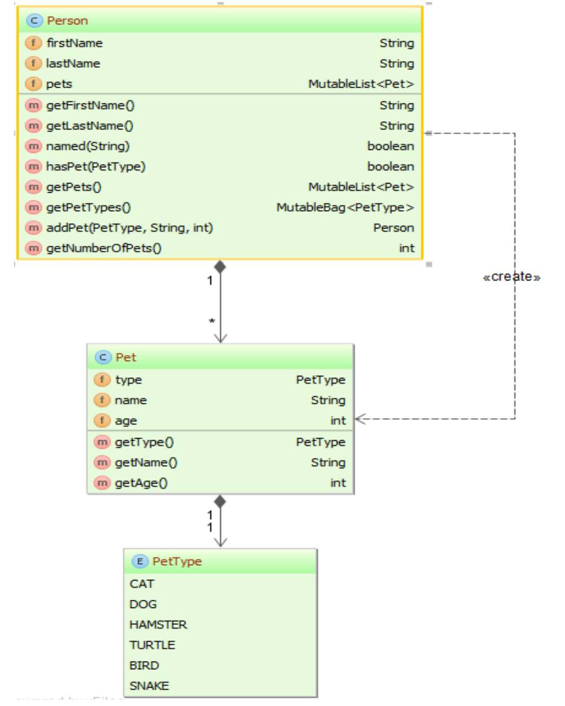

The Pet Kata
Created by Charo Nuguid
Pet Kata Domain
Below are the domain objects for the Pet kata.
Taken from The Eclipse Collections: Pet Kata
Exercise 1
- Scroll down for the concepts
- Scroll to the right for the solution
Functions
Also known as a procedure or a subroutine.
Can take zero or more arguments.
See Tour Of Go for an example.
Functions
When two or more parameters share the same type, you can omit the type from all but the last
See Tour Of Go for an example.
Functions
Functions can also return multiple results
See Tour Of Go for an example.
Exercise 1
Figure out how to get Exercise1_test.go to pass using what you have seen so far.
Exercise 1 Solutions
- Scroll down for the concepts
- Scroll to the right for Exercise 2